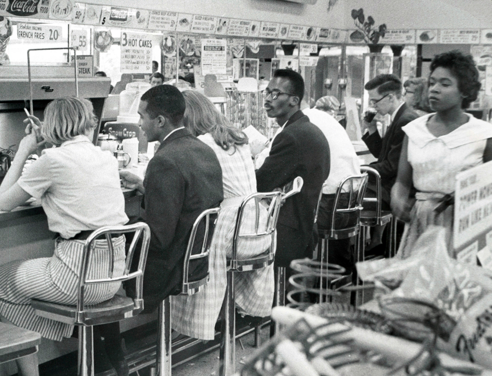
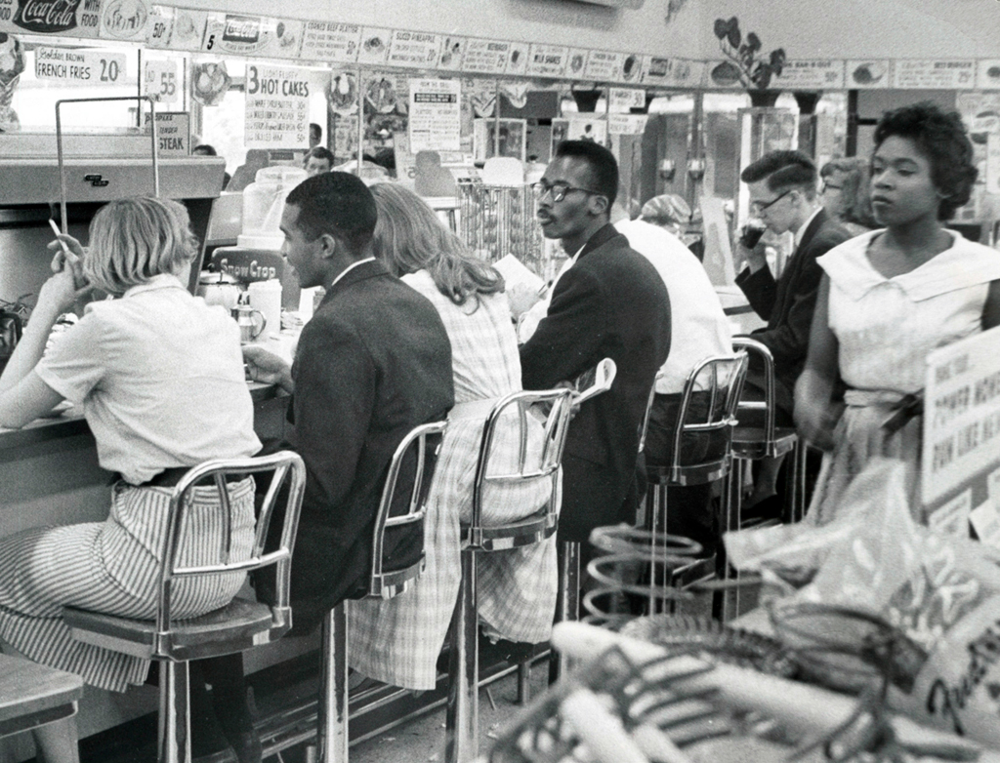
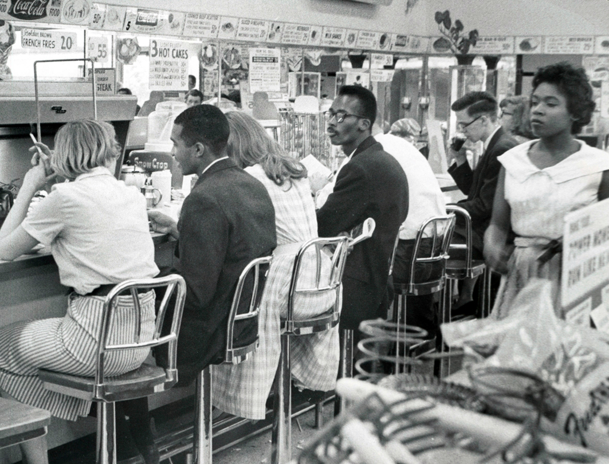
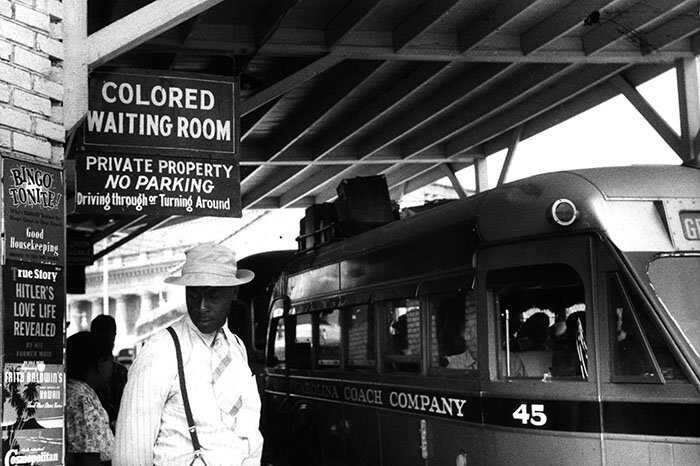
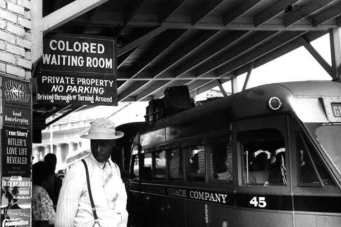

How did these laws affect African Americans' daily lives?

Even after slavery ended, many African Americans would face discrimination and would be limited from doing things.
Restrictions from the Jim Crow Laws made it really difficult for African Americans to gain economic freedom.
Transportation facilities like buses and trains restricted where colored people could sit at, it would usually be near the back. On buses, if any white person wanted your seat, you would have to give it to them.
The "separate but equal” doctrine often led to inferior facilities for African Americans so it would be harder to get a job or a place to live compared to a white person.
These laws often made it hard to impossible for black people to vote or run in elections. Some towns mandated taxes or tests in order for someone to vote which were mainly targeted at black people.
People sometimes had to watch what they said because saying or doing the wrong thing could get them lynched. One famous example was Emmett Till who was lynched after being accused of whistling at a white women.
Many colored Americans tried to escape the South to avoid all the discrimination there, but most Western and Northern states had Jim Crow Laws of their own.
Many African Americans were farmers but they couldn't afford farms so they resorted to sharecropping; they would pay their rent with part of their crops. This cut away from their already low income to even less.
Under Jim Crow laws states could allow separate facilities for not only schools, but hospitals, clinics, sports events, restaurants, barbershops, railroad, bus stations, restrooms, beaches, public parks, and many other places.
Organizations like the KKK used violence to terrorize and stop African Americans from asserting their rights.
 

 
